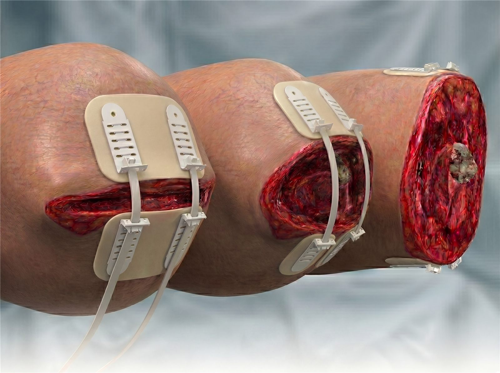
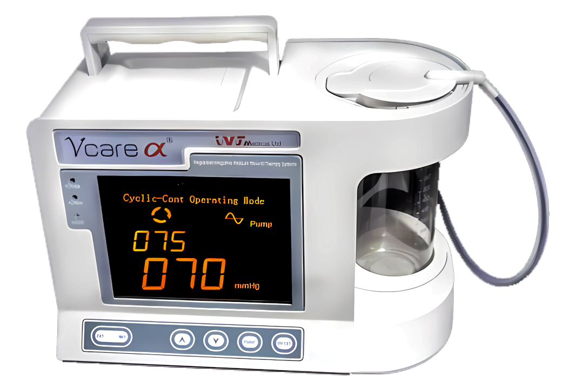
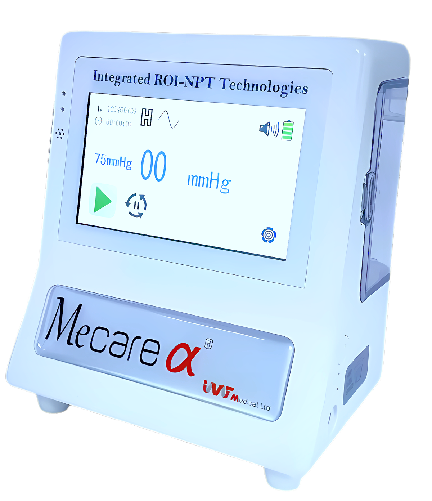

Precision Infection Control & Wound Closure
Redefining the standard of wound care, worldwide.
IVT Medical is a pioneering R&D company advancing medical device technology in wound healing and closure, developing affordable, safe and effective state-of-the-art solutions for surgeons and care teams across the globe.


Vcare α®Regulated NPWT

MeCare α®Portable NPWT
3
Core proprietary technologies
30+
Peer-reviewed publications
15+
Years of published wound care research
∞
Civil, military & mass-casualty settings
✓ FDA Cleared Devices
✓ ISO 13485:2016 Certified
✓ Israel MoH (AMAR) Registered